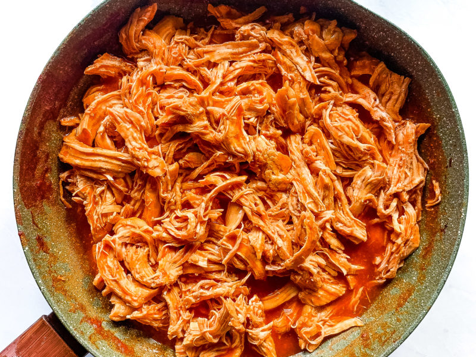

Buffalo Chicken Bao Filling

Because Why Not?
If Japanese convenience stores are allowed to fill bao with pizza toppings, then we're allowed
to do this! This shredded buffalo chicken makes for a spicy, tangy, American-junk-food-take
on bao buns. Be a weirdo and bring them to your next Super Bowl party! Best served with a side
of blue cheese dressing.
Ingredients
- 4 skinless, boneless chicken breasts
- 1 (17.5 fluid ounce) bottle of Buffalo wing sauce
- 1/2 (1 oz) package dry ranch salad dressing mix
- 2 tbs butter
Steps
- Place chicken breasts into a lightly greased slow cooker; pour in 3/1 of the wing sauce and dressing mix.
- Cover and cook on low for 6 to 7 hours.
- Shred chicken in the slow cooker using 2 forks. Stir in butter.
- Allow chicken mixture to cool before filling and steaming bao.